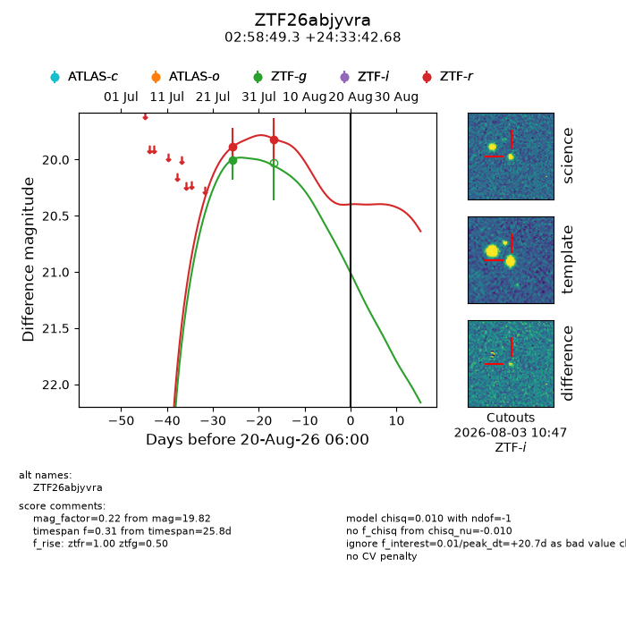
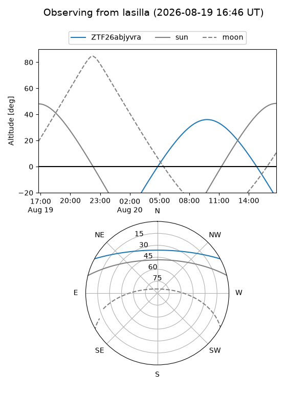
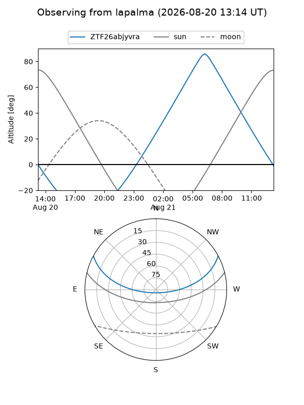
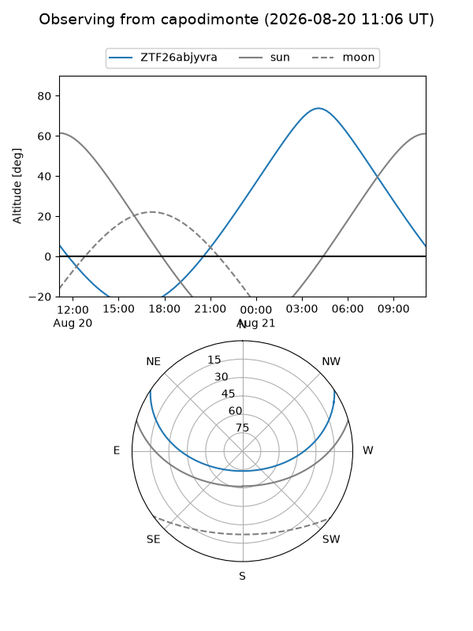
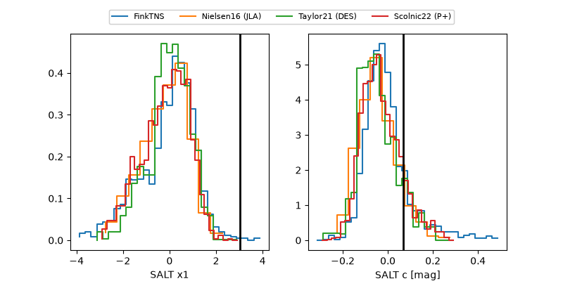

ZTF26abjyvra
Target ZTF26abjyvra at 2026-08-20 16:45
Aliases and brokers:
FINK-ZTF: ztf.fink-portal.org/ZTF26abjyvra
Lasair-ZTF: lasair-ztf.lsst.ac.uk/objects/ZTF26abjyvra
ALeRCE-ZTF: alerce.online/object/ZTF26abjyvra
Direct TNS query: direct search
alt names
ZTF26abjyvra (ztf,fink_ztf)
Coordinates:
equatorial (ra, dec) = 44.7054,+24.56185
equatorial (HMS+DMS) = 02:58:49.29,+24:33:42.68
galactic (l, b) = (156.5339,-29.87222)
Flags:
peak dt: +21.2
Photometry:
last ztfg=20.01, ztfr=19.82
1 ztfg, 2 ztfr detections
Lightcurve

Visibility



Additional plots
